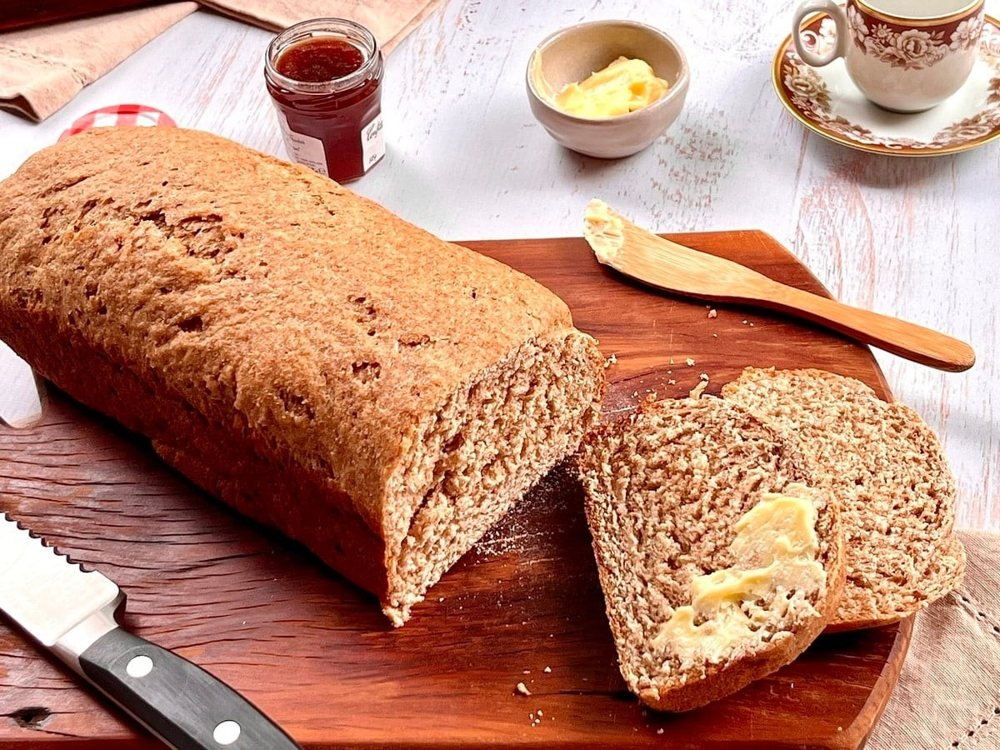

Salgados · Massas fritas/assadas
Pão integral com melado

Ingredientes
- 3 colheres (sopa) de açúcar
- 2 tabletes (30 g) de fermento para pão
- 4 colheres (chá) de sal
- 4 xícaras de farinha de trigo integral
- 3 a 3 ½ xícaras de farinha de trigo
- 2 ½ xícaras de leite
- ⅓ xícara de manteiga ou margarina
- ⅓ xícara de melado
- Farinha de trigo para polvilhar
- Manteiga ou margarina para untar
Modo de preparo
- Numa tigela grande, misture o açúcar, o fermento, o sal, 2 xícaras de farinha de trigo integral e 1 xícara de farinha de trigo.
- Numa panela, coloque o leite, a manteiga e o melado e leve ao fogo baixo até que fiquem bem quentes.
- Com a batedeira em velocidade baixa, misture aos poucos os ingredientes líquidos aos secos. Em velocidade média, bata por 2 minutos. Junte mais ½ xícara de farinha de trigo e bata por mais 2 minutos.
- Adicione mais 1 ½ xícara de farinha de trigo integral e cerca de 1 ½ xícara de farinha de trigo, batendo com uma colher de pau.
- Coloque a massa sobre uma superfície enfarinhada e amasse até ficar elástica. Forme uma bola e ponha numa tigela untada; vire a massa e ponha em lugar aquecido até dobrar de volume.
- Abaixe a massa, ponha numa superfície enfarinhada, corte-a ao meio e cubra com um pano. Deixe descansar por 15 minutos. Unte duas fôrmas de bolo inglês de 13 x 23 cm.
- Com um rolo, abra um pedaço de massa até obter um retângulo de 20 x 30,5 cm e enrole-o como rocambole, apertando bem. Feche as extremidades e achate-as. Dobre-as para baixo e ponha o pão na fôrma preparada.
- Repita a operação com a massa restante, cubra e deixe dobrar de volume. Asse os pães no forno preaquecido em temperatura média (200 °C) por 30 a 35 minutos. Desenforme, deixe esfriar e congele.
Observação
Para verificar o tempo de crescimento da massa de pão, coloque uma bolinha de massa em um copo com água logo que preparar a massa: quando a bolinha subir à superfície, a massa estará crescida. Congelamento: embale o pão em filme plástico ou papel-alumínio e coloque num saco plástico; retire o ar, vede bem, etiquete e congele. Descongelamento: em temperatura ambiente por cerca de 2 horas.